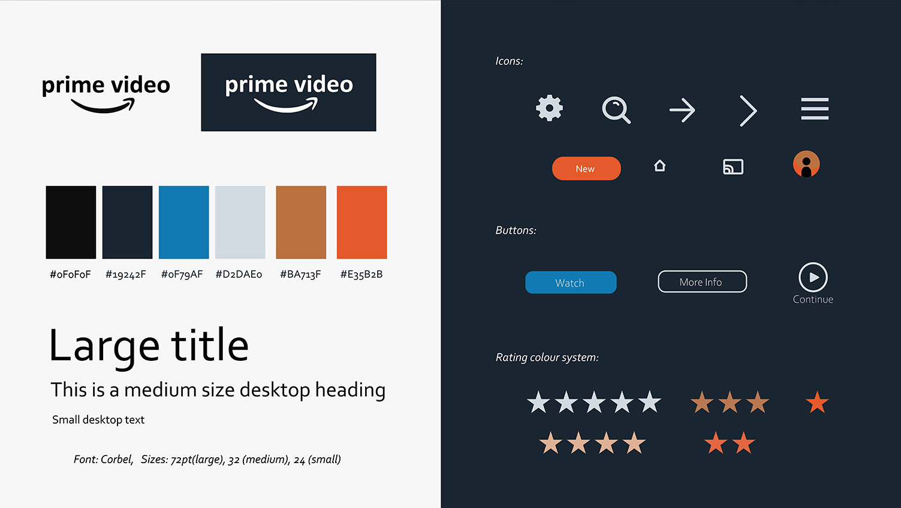

Prime Video Re-design
My task was to re-design the Prime Video user interface, in a way that breaks up content into themed packages and solidifies their “premium” feel and brand identity.
Designs were created in Adobe XD, icons were created in Adobe Illustrator.
Requirements
Prime wants their users to feel like they are a part of something exclusive. It was important to make sure the new user interface gave a high quality, premium experience. The design had to feel modern while allowing the original feel of the brand to shine through. Users should feel like they are still a part of the original brand experience, just updated. The interface should be simple and easy for anyone to use with sans-serif fonts and large images.
The new UI must have the following new categories:
- What's trending
- Latest arrivals
- Prime originals
- TV shows
- Movies
- Just for kids
Deliverables included the following designs:
- One or more of the above category pages
- Video player screen
- Mobile view including mobile video player
Research and planning
In order to understand how streaming UIs are generally designed I looked at each streaming service to which I am subscribed. At the time this project was created, many of these applications include a large header image, lots of menu options, a search field, and card-like images for their movies and shows. Here is a screen shot from the current Prime Video UI.
An issue I noticed when browsing through these UIs is that while still navigable, there were a lot of options and buttons on the screen for the user to click on. Sometimes I was confused about where to find basic functionality like searching, recently watched content, a log out button, and so on. With my designs I simplified the UI by removing some of the clutter and leaving only the most essential functions in place. When planning my designs I asked myself – could my grandma use this app? I tried to get my designs to a place that was as close as possible to “yes” while still fulfilling the project requirements.
Styles
The colour palette I chose was inspired by the already existing colours in Prime Video. This helps the users to feel like they are still using the original Prime service they have grown to love. Orange is used as an accent colour, notably on the “New” button, drawing attention to new content. I implemented a new color system for ratings, so users can see in an instant the average rating for a movie or show. Corbel was chosen as the sans-serif font and is used all throughout the application.
Designs
The format of this page can be used for any of the Prime Video categories. There is a header image featuring titles included in the category, overlaid with movie info, a navigation bar, and an arrow for browsing. Movie info includes “Watch” and “More Info” buttons, as well as indicators for if a title is new, the title’s rating and genre. The navigation bar is simple and includes a search button and hamburger icon. When clicked, the menu slides into the screen.
The menu includes the main Prime categories, account settings, and a logout button. All possible account settings are found under “Settings” and the logout button isn’t buried inside menus like it often is in other applications. Basic tasks a user would like to accomplish, like finding a title, making changes in their account, and playing a movie, are easily accessible from the main screen. There is no extra clutter to confuse users that are less experienced with technology. Below the header users can browse through their recently watched content and other categories. Titles are displayed as movie posters in a gallery format. When a user clicks on an image, a new modal opens.
This view would also open when a user clicks the “More Info” button on a feature title in the header. It is a modal rather than a separate page, so the user feels like they have not left the main screen and are just peeking at the title. They see a detailed description and can choose to play (or continue) the title. Once they click play the video player opens, expanding to full screen.
The mobile view is very similar to the full-screen size designs above. The navigation was moved to the bottom of the screen, closer to user’s fingers when using a phone. A Chromecast button was added to the top of the video player.
Conclusions
This project helped me to improve my UI design skills, particularly for apps that are more involved than the basic websites I often create. It was enjoyable doing a re-design project where I got to research streaming services and consider how I can improve them within the constraints of my project.
I was also able to improve my Adobe XD skills. It was great to take advantage of everything that a full UX/UI design tool has to offer – especially being able to create my own components and learn how to prototype (not included in this case study). My process using XD was not as organized as it could have been, but this sets the foundation for my next project.
Overall I believe this project fulfills the requirements set out at the start. The new UI evokes feelings of exclusivity and is a modern, up-to-date design. It is less cluttered than other streaming UIs and is usable for anyone.
Original design brief came from Briefbox. Movie posters from joblo.com